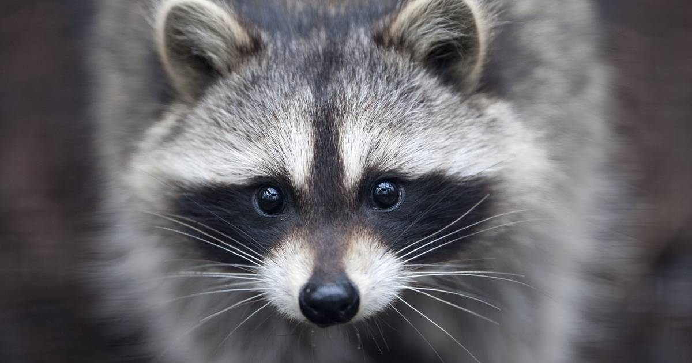

Berberapen zijn born to be wild
Help de dieren met een donatie!
Wij werken aan een oplossing voor
Serval xirus kreeg als huisdier niet de juiste verzorging
Exotische huisdieren
Chimpansee Linda werd uit het wild gesmokkeld
Illegale dierenhandel
Het laatste nieuws
Aap gaat ook laatste Limburgse wasberen opvangen
Kom langs in de opvangcentra van aap
Samen maken we einde aan het leed van exotische dieren in europa
Volg de verhalen op socialmedia
 alles over de diervriendelijke aanpak van AAP doneer naar overzichtIn onze opvang geven we dieren in nood weer een veilige plek en professionele verzorging.
ja,kom kijken482
Dieren nu bij AAP in de opvang